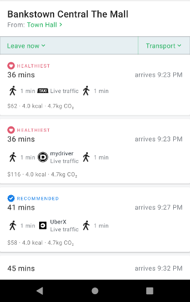
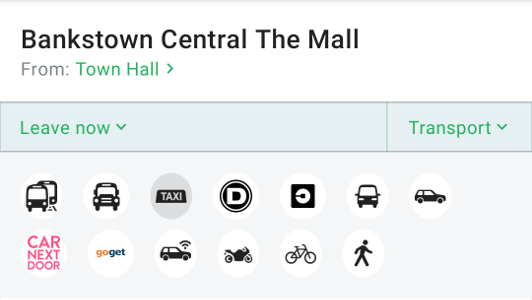
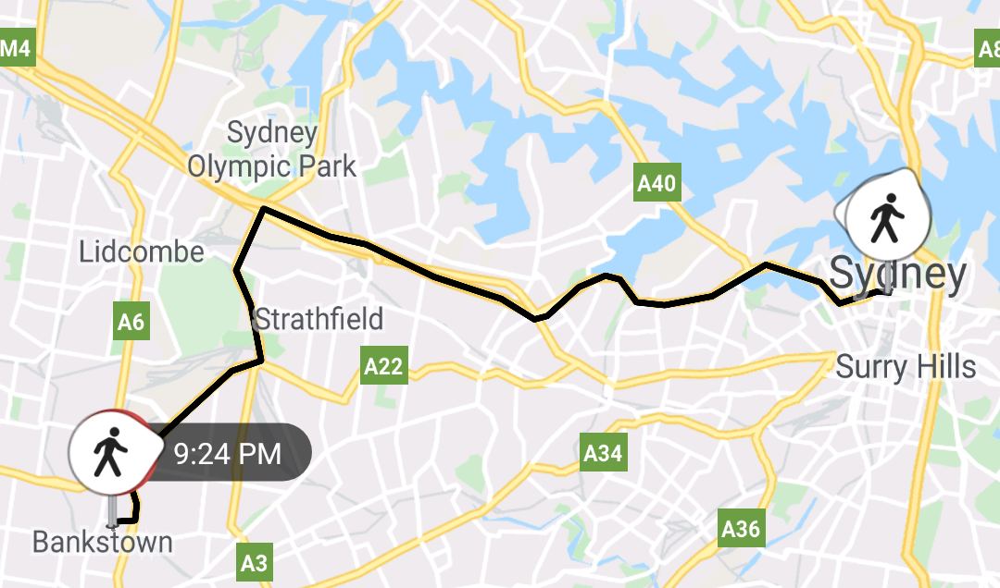
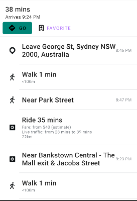

Once you have two Location objects, you can get a list of routes between them, the individual services that handle those
routes, and the individual segments.
The TripResultListFragment takes a Query which contains a pair of Locations as well as weighting information,
and displays a list of possible routes.
Query
To begin with, you'll need to build a Query object. Queries have locations, transport mode weighting, and contain
information about transfer time and walking speed. Two Locations are required, but the rest is optional.
val query = Query().apply {
fromLocation = departureLocation
toLocation = destinationLocation
cyclingSpeed = 1
walkingSpeed = 1
environmentWeight = 0.5
hassleWeight = 1.0
budgetWeight = 2.0
setTimeTag(timeTagForQuery)
}| Parameter | Description |
|---|---|
| fromLocation | Sets the departure location. |
| toLocation | Sets the destination location. |
| cyclingSpeed | A value of 0, 1, or 2. 0 = slow (12 km/h), 1 = medium (18 km/h), 2 = fast (25 km/h) |
| walkingSpeed | A value of 0, 1, or 2. 0 = slow (2.5 km/h), 1 = medium (4 km/h), 2 = fast (4.5 km/h) |
| transferTime | Preferred minimum transfer time in minutes. |
| timeWeight | Part of the weighting profile specifying the user's preference for duration. It should be a value between 0.1 (unimportant) and 2.0 (important). |
| budgetWeight | Part of the weighting profile specifying the user's preference for price. It should be a value between 0.1 (unimportant) and 2.0 (important). |
| hassleWeight | Part of the weighting profile specifying the user's preference for convenience. It should be a value between 0.1 (unimportant) and 2.0 (important). |
| environmentWeight | Part of the weighting profile specifying the user's preference for environmental impact. It should be a value between 0.1 (unimportant) and 2.0 (important). |
| unit | Sets the distance unit used. It should be a string value of "auto", "imperial" or "metric" |
TripResultListFragment

Once you have your query, you can launch a TripResultListFragment, which displays the results of an A-to-B route
and automatically handles date/time selection and transit mode filtering.

Transit modes are automatically saved and restored from SharedPreferences the next time that a trip result is displayed.
val fragment = TripResultListFragment.Builder()
.withQuery(query)
.build()The origin and destination locations are clickable. When clicked, the fragment calls an OnLocationClickListener.
fragment.setOnLocationClickListener(
startLocationClicked = {
// You could show a LocationSearchFragment here
},
destinationLocationClicked = {
// Or do nothing at all?
})When the user chooses a particular trip, the OnTripSelectedListener will be called with a ViewTrip result.
You can then launch a TripSegmentListFragment to display the individual segments.
fragment.setOnTripSelectedListener { viewTrip -> tripSelected(viewTrip)}TripResultMapFragment

With a ViewTrip chosen, you can display the route using a TripResultMapFragment. As TripKit caches route information
in the background, you only need to pass a UUID to the withTripGroupId function in the TripResultMapFragment.Builder.
val mapFragment = TripResultMapFragment.Builder()
.withTripGroupId(viewTrip.tripGroupUUID)
.build()TripSegmentListFragment

A list of trip segments can be shown with a TripSegmentListFragment. It can optionally show action buttons, in this
example, "Go" and "Favourite".
To build a TripSegmentListFragment, you only need a ViewTrip's UUID.
val fragment = TripSegmentListFragment.Builder()
.withTripGroupId(viewTrip.tripGroupUUID)
.build()If you'd also like to use buttons, pass it a list of TripKitButtons. A TripKitButton consists of a string identifier,
which you'll receive in the button click handler, and a resource identifier for a layout which will be inflated. The
layout can contain a single Button if you'd like.
<?xml version="1.0" encoding="utf-8"?>
<com.google.android.material.button.MaterialButton
xmlns:android="http://schemas.android.com/apk/res/android"
xmlns:app="http://schemas.android.com/apk/res-auto"
android:layout_width="wrap_content"
android:layout_height="wrap_content"
android:text="Go"
app:backgroundTint="@color/colorPrimary"
android:drawableLeft="@drawable/ic_directions"
android:theme="@style/Theme.MaterialComponents"
style="@style/Widget.MaterialComponents.Button.UnelevatedButton"/>val buttonList = listOf(TripKitButton("go", R.layout.go_button),
TripKitButton("favorite", R.layout.favourite_button))
val fragment = TripSegmentListFragment.Builder()
.withTripGroupId(trip!!.tripGroupUUID)
.withButtons(buttonList)
.build()When the button is clicked, the TripSegmentListFragment.OnTripKitButtonClickListener will be called with the id of the TripKitButton and the
current trip group.
fragment.setOnTripKitButtonListener { id, tripGroup ->
// Do something with the button
}TripResultPagerFragment
To provide a more convenient user interface, the TripResultPagerFragment bundles all of the possible TripSegmentListFragments
for a given result list into a view pager, allowing the user to swipe back and forth through the routes. If it is given a
TripResultMapFragment, it will automatically change the map to display the correct route.
Like the TripSegmentListFragment, you can pass it TripKitButtons, and provide a TripResultPagerFragment.OnTripKitButtonClickListener to receive the click events.
val pagerFragment = TripResultPagerFragment.Builder()
.withTripButton("go", R.layout.go_button)
.withTripButton("favorite", R.layout.bookmark_button)
.withMapFragment(mapFragment)
.withViewTrip(viewTrip)
.build()
pagerFragment.setOnTripKitButtonClickListener { id, tripGroup ->
if (id == "go") {
Toast.makeText(context!!, "Will go to ${tripGroup.uuid()}", Toast.LENGTH_SHORT).show()
} else if (id == "favorite") {
Toast.makeText(context!!, "Will add ${tripGroup.uuid()} as a favorite", Toast.LENGTH_SHORT).show()
}
}